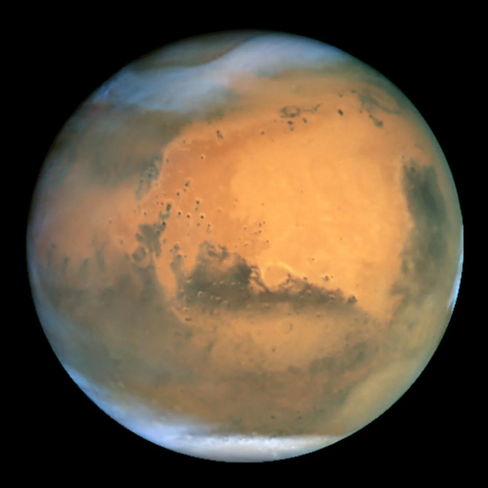

Our Solar System
Mars: a cold desert at the edge of the habitable zone
Mars is a rocky planet with 0.53 Earth radii and 0.11 Earth masses. It orbits the Sun in 687 days at 1.52 AU. Its thin atmosphere consists mainly of carbon dioxide; the surface pressure is about 0.01 bar and the mean temperature −65 °C. River valleys, deltas and lakebeds point to a watery past.
Mars lies near the outer boundary of the Sun's habitable zone. But it is too small to hold a thick atmosphere, and its liquid water was probably lost along with it. For exoplanets this means: a place in the habitable zone alone is not enough – the size of the planet matters too.
Moons: Mars has two small moons, Phobos and Deimos, discovered by Asaph Hall in August 1877. They are thought to be captured asteroids or debris from the early Solar System. Phobos, the larger one, orbits Mars three times a day and is approaching it by 1.8 meters per century; Deimos takes 30 hours for one orbit.
Sources: NASA (NSSDCA): "Planetary Fact Sheet – Metric.", accessed 2026-11-20; NASA (NSSDCA): "Planetary Fact Sheet – Ratio to Earth Values.", accessed 2026-11-20; NASA Science: "Mars: Facts.", accessed 2026-11-20; NASA Science: "Moons of Mars.", accessed 2026-11-20; NASA Science: "What Is the Habitable Zone?", accessed 2026-11-20; ESO: "Three Planets in Habitable Zone of Nearby Star" (eso1328, note 3)., accessed 2026-11-20; NASA Science: "Cosmic neighborhoods to avoid.", accessed 2026-11-20